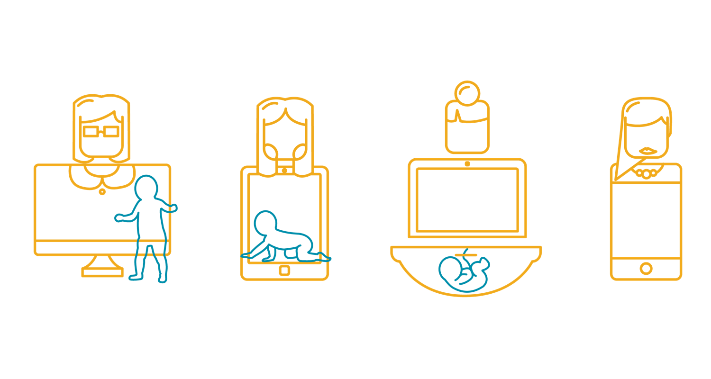
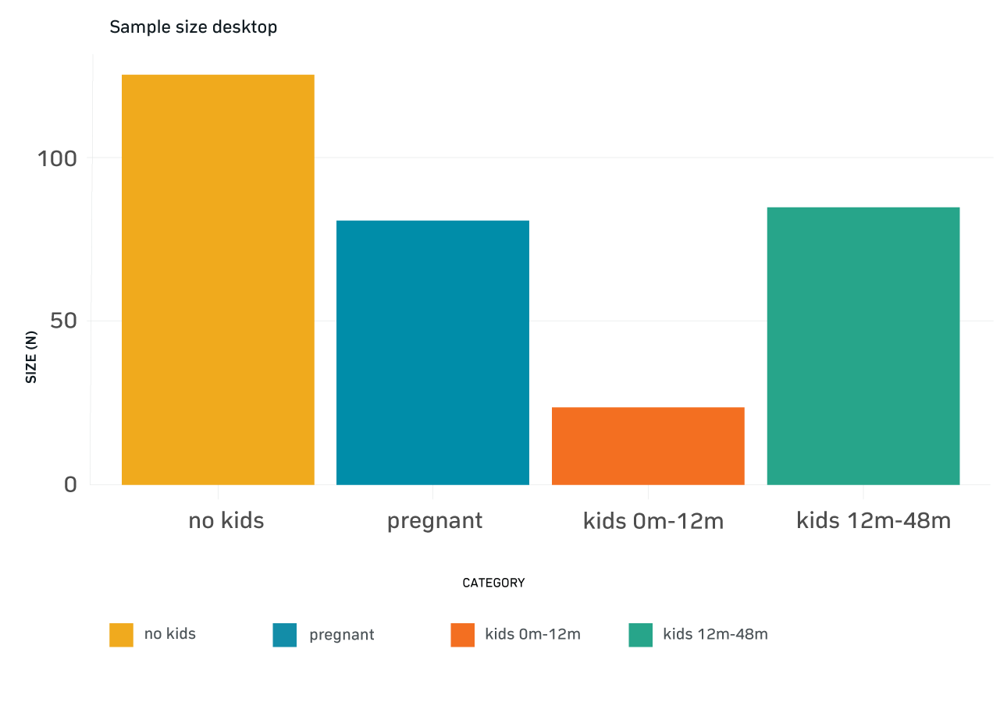
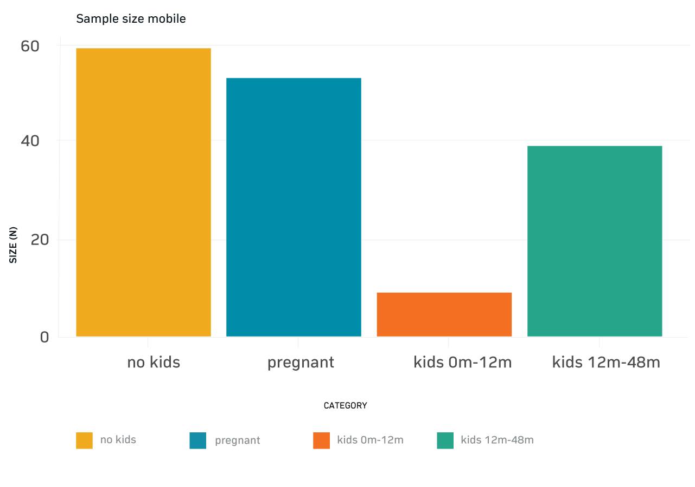
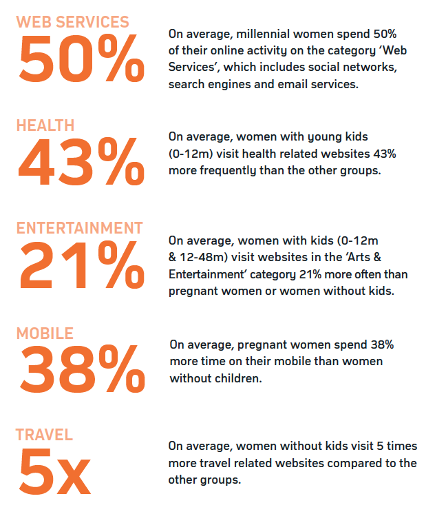
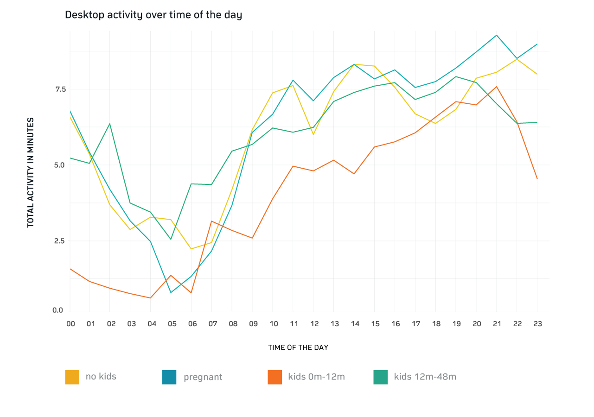
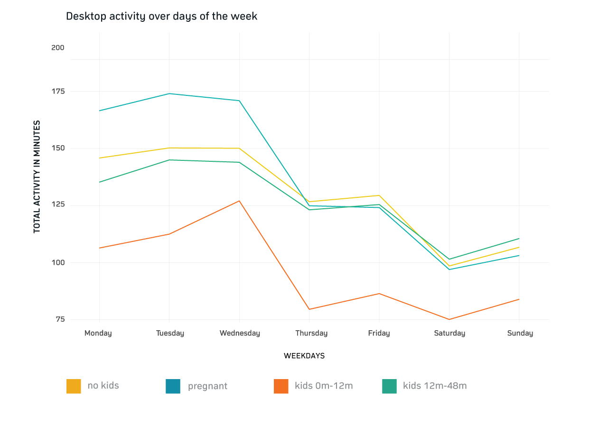
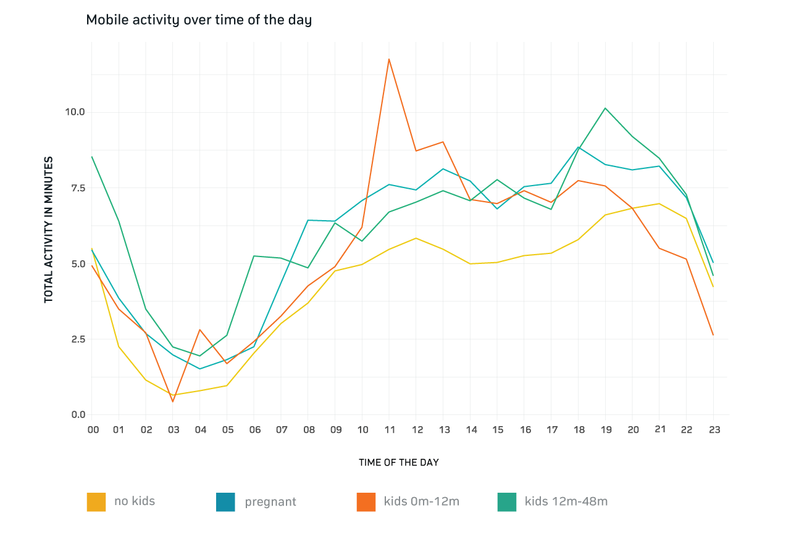
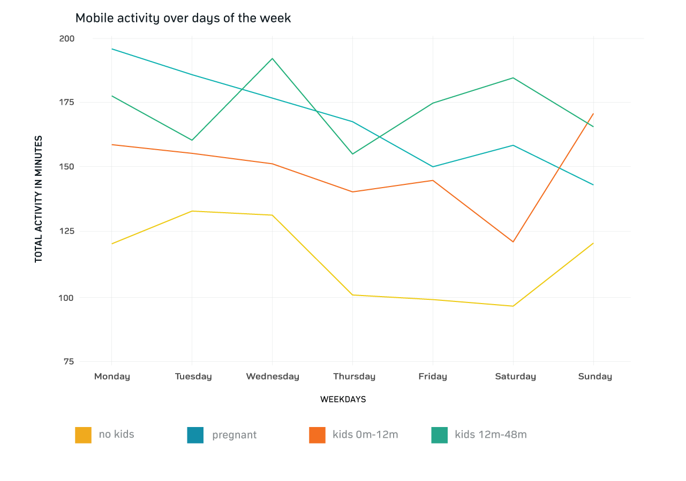
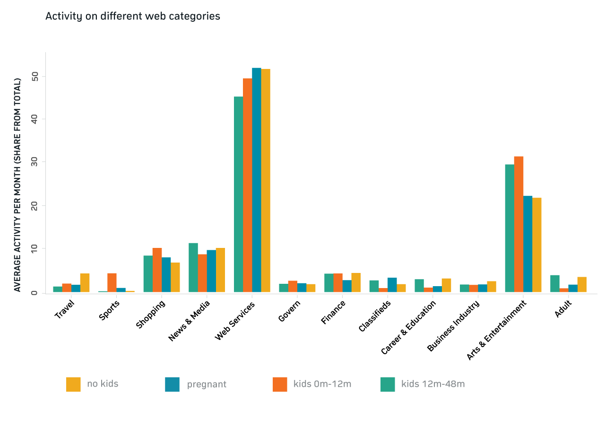
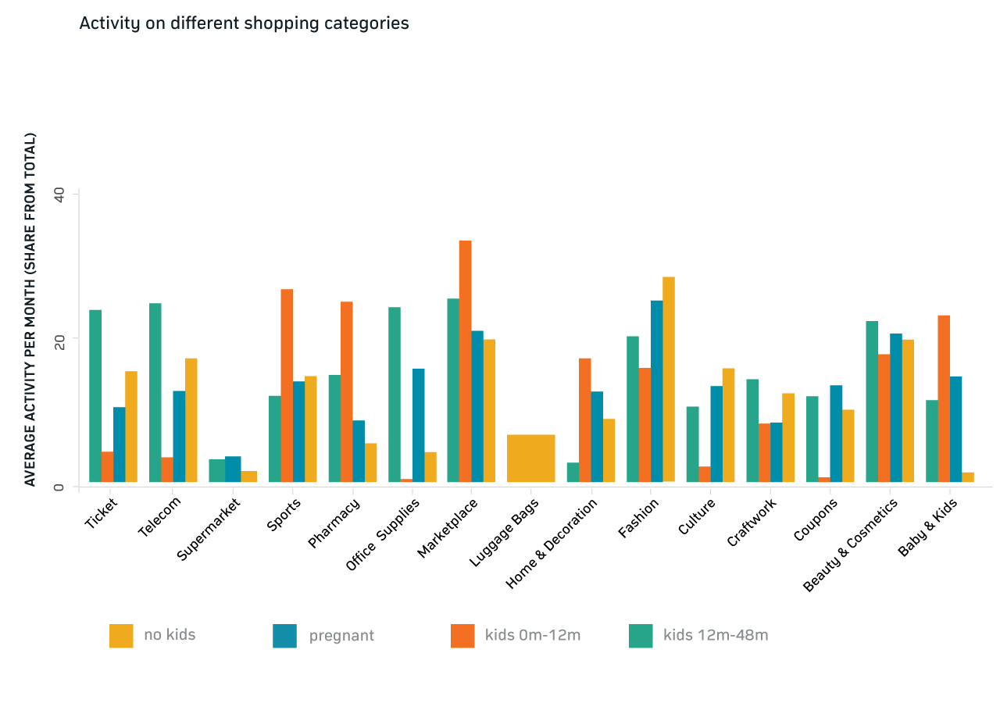

Millennials matter. There is no question about the importance of millennials as a target group for brands. Their (online) purchasing power is significant. However, this generation has also witnessed financial uncertainty which makes them more fiscally conservative – they want to play it safe. This makes it even more important to understand their decision making process to successfully turn them into customers.
Millennials have grown up. ‘First comes marriage, then offspring’ – This is one of the conventions that millennials have turned around. They place more importance on being parents, but not necessarily getting married. A birth of a child is a turning point in everyone’s life. New priorities are being set and new brand loyalties are being built.

MillennialWomen
Research objective
Millennials starting their own families made us curious about the details of how they behave online. 3 out of 4 moms identify themselves as the primary shopper in their household.1 62% of them use shopping apps. 50% actively use social media, in comparison to 37% of the rest of the population.2
This is why we chose the following groups, using sample from Netquest in Brazil:
No kids/not pregnant
Pregnant
Kids (0 to 12 months)
Kids (12 to 48 months)
This research aims to understand the online behavior of pregnant millennials, millennial moms with kids of different ages and millennials without children to uncover differences in the behavior at different family statuses.
Research questions
When are the different groups active online?
How active are the different groups online?
How is their activity split across different devices?
What do they do online across different categories?
Methodology
As a first step of this exploratory analysis, we targeted the different sample groups with a survey of their family status.
The passive behavioral data of these different sample groups across one month of desktop and mobile usage was classified into various categories of interest.
Sample
On desktop, the sample groups have been distributed as follows:
Desktop

On mobile, the sample groups have been distributed as follows:
Mobile

Results
Let’s start with some big numbers:

We looked at the overall daily and weekly desktop and mobile activity for each group:
Desktop activity


Across all groups we can see similar behavior regarding the activity levels at different times of the day. Within each group the activity in the evening is the highest. Pregnant women have the highest activity across all groups during the evening.
Overall, the activity of women with small kids is the lowest, which supports our hypothesis that they don’t have as much time alone to spend on their desktop device and instead spend most of their time with their kids. Compared to that, pregnant women are significantly more active.
The level of activity for women with older kids (12m-48m) and women without kids is very similar. This leads us to the conclusion that as the kids get older, the desktop activity of these moms shifts towards their behavior before being pregnant and having a baby, because they start to have more time without their kids.
All groups are more active in the beginning of the week (Monday - Wednesday) compared to the rest of the week. Tuesday and Wednesday are the most active days and Saturday the day with the lowest activity. This could mean that the family spends more time together or outside of the home during the weekend.
Mobile activity


The behavior of women with small kids (0m-12m) is the most irregular regarding the times of the day. Apart from these peaks, the spread of activity within each group is similar when looking at the different times of the day.
Women with kids from 12-48 months have the highest activity across all groups during the evening. Overall, the differences in the behavior are not as big as on desktop devices, which might have to do with the integration of mobile devices into our lives, and the fact that mobile devices are used more on the side.
Women without kids have the lowest activity across the groups, which might have to do with the fact that they spend more time with offline activities and are working during the day. However, their highest activity is from Monday to Wednesday with a huge decrease in activity from Thursday to Saturday.
The mobile activity of women without kids as well as of women with small kids (0m-12m) increases a lot from Saturday (lowest activity) to Sunday. Women with small kids (0m-12m) even have their highest activity on Sunday. The reason for that might be that moms get some support with the kids.
The activity spread of women with kids between 12-48 months is most variable from day to day – their highest activity is on Wednesday, the lowest on Thursday. Also, the activity increases on Saturday, while it drops on Sunday.
Categories
We categorized the data into 12 different categories to explore the frequency of visits and the differences in the behavior across the different groups:

categories
Across the board, the women spend most of their time on ‘Web Services’, which include social networks – followed by three other highly frequented categories: ‘Arts & Entertainment’, ‘News and Media’ and ‘Shopping’.
We can see that women without kids spend more time browsing on ‘Travel’ websites, which might lead to the conclusion that they have more free time to spend on travel planning. Not surprisingly, they are also more active on ‘Career & Education’ related websites, followed by women with older kids (12m-48m) who might think of shifting their attention back to their careers.
‘Sports’ related websites are dominated by women with small kids (0m-12m), maybe because they are either looking for baby sports or recovery gymnastics. We can also see that women with kids are more active on ‘Arts & Entertainment’ websites – maybe because they spend more time at home as well as to entertain their kids (12m-48m).
Pregnant women spend more time on ‘Classifieds’ websites than the other groups which can be related to their need for baby equipment, whereas women with older kids (12m-48m) are also more active than the remaining two groups – we can assume that they start selling some of their baby equipment.
Even though the activities within the ‘Finance’ category don’t show huge differences between women without kids and women with kids, we saw that women without kids visit 6 times more finance related websites per week that are related to financial management (e.g. their banking account). On the other hand, women with kids have more visits on the financial services subcategory (e.g. loans). Pregnant women are not as active on finance related websites as the other groups.
Shopping
We also delved a bit deeper into the shopping subcategories:

Looking into the shopping subcategories, women without kids are the most active in the ‘Fashion’ and ‘Culture’ categories, but also show high activities for ‘Tickets’, ‘Telecom’, ‘Craftwork’ and ‘Beauty & Cosmetics’. Moreover, they are the only group that visited ‘Luggage Bags and Backpack’ websites. These broad shopping interests support the idea that they have more free time for themselves compared to the other groups. Not surprisingly, their activity in the ‘Baby and Kids’ category is the lowest.
We see that ‘Sports’, ‘Pharmacy’, ‘Marketplaces’, ‘Home Decorations’ and ‘Baby and Kids’ are more frequented by women with children younger than 1 year, who have the highest shopping activity in general. This might have to do with their interest in recovery gymnastics (Sports) and an increased need for medicaments (Pharmacy) and baby products (Marketplaces, Baby and Kids). It is interesting that they have the the lowest activity across all other categories compared to the other groups.
The ‘Ticket’, ‘Telecom’, ‘Office Supplies’ categories are highly dominated by women with older children. They also have slightly the highest activity on ‘Beauty & Cosmetics’ websites, whereas their activity on the ‘Sports’ and ‘Home and Decoration’ shopping categories is the lowest compared to the other groups.
Pregnant women slightly dominate the ‘Coupons’ and ‘Supermarket’ categories, but are also quite active in the ‘Office Supplies’, ‘Home & Decoration’, ‘Fashion’, ‘Culture’ and ‘Baby and Kids’ categories which implies that they need to purchase various baby equipment within different shopping categories.
Conclusion
The results provide meaningful insights into behavioral differences and priorities of millennial women. The family status has a huge impact on the intensity of activity on different weekdays and specific times as well as which website categories are frequented. The detailed insights into what the different groups do online are great opportunities for brands to not only understand when it is best to connect to each segment, but also where to reach out to them most effectively.
You can download the handout of our case study here.